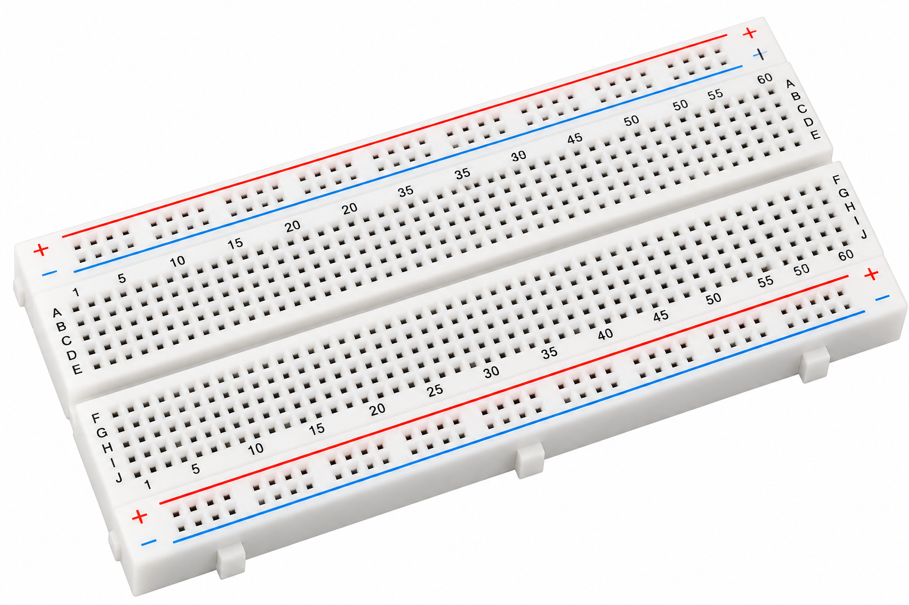

ESP32_CAM_Visitor_Notification.ino

Visitor Notification System

To develop a visitor notification experiment using an AI-Thinker ESP32-CAM, HC-SR501 PIR motion sensor and active buzzer. The system detects motion, produces an audible indication, captures a JPEG photograph and attempts to send the image through a Telegram bot over Wi-Fi.
The Visitor Notification System demonstrates PIR motion detection, camera interfacing, image capture, Wi-Fi communication and remote event notification.
An HC-SR501 PIR sensor monitors changes in infrared radiation associated with movement. Its digital output is connected to GPIO13 of the ESP32-CAM.
When motion is detected, the ESP32-CAM activates an active buzzer connected to GPIO14 for approximately 700 ms.
The integrated camera then captures a JPEG image. Using the Telegram Bot API, the ESP32-CAM attempts to send the captured image to the configured chat.
A 10-second cooldown reduces repeated notifications from continuous PIR activity.
| Parameter | Configuration |
|---|---|
| Controller | AI-Thinker ESP32-CAM |
| Motion Sensor | HC-SR501 PIR |
| PIR Input | GPIO13 |
| Buzzer Output | GPIO14 |
| Buzzer Duration | 700 ms |
| Notification Cooldown | 10 seconds |
| Image Format | JPEG |
| Camera Resolution | VGA with PSRAM, QVGA otherwise |
| Telegram API | sendPhoto |
| Serial Monitor | 115200 baud |
A PIR sensor detects motion associated with changing infrared radiation. It cannot distinguish a human visitor from other moving warm objects.
The experiment sends photographs to a configured Telegram chat. Test only in an authorized area where people are informed about image capture.
The supplied experiment does not implement facial recognition, visitor identification, automatic door unlocking or a local web dashboard.

Main controller with integrated camera and Wi-Fi.

Detects movement and provides a digital output.

Provides audible feedback when motion is detected.

Used for assembling the external sensor circuit.

Connect the PIR sensor and buzzer to the ESP32-CAM.
An ESP32-CAM-MB programmer or suitable USB-to-TTL programmer is needed to upload the sketch.
The camera is integrated into the AI-Thinker ESP32-CAM board and is not added as a separate component.
Arduino Libraries: WiFi.h, WiFiClientSecure.h, esp_camera.h and UniversalTelegramBot.h. The UniversalTelegramBot library may also require ArduinoJson.
| PIR Pin | ESP32-CAM Connection |
|---|---|
| VCC | 5V, if supported by the sensor module |
| GND | GND |
| OUT | GPIO13 |
| Buzzer Terminal | ESP32-CAM Connection |
|---|---|
| Positive / Signal | GPIO14, through driver if necessary |
| Negative / GND | GND |
| Function | GPIO / Setting |
|---|---|
| PIR Motion Input | GPIO13, INPUT |
| Active Buzzer | GPIO14, OUTPUT |
| Camera | AI-Thinker camera pin mapping |
| MicroSD Interface | Not used by this sketch |
Confirm that the PIR OUT voltage is compatible with 3.3V ESP32 inputs. A typical HC-SR501 module provides a logic output suitable for common ESP32 interfacing, but module specifications must be checked.
The buzzer must be a suitable low-current active type. Use a transistor driver when its current requirement exceeds the GPIO rating.
GPIO13 and GPIO14 are also associated with the ESP32-CAM microSD interface. This sketch does not use the microSD card.
Ensure a stable, suitable power supply for camera operation and Wi-Fi transmission.

The HC-SR501 detects a change in infrared radiation and drives its output HIGH according to its module timing and sensitivity settings.
A valid motion-triggered event activates the buzzer for approximately 700 milliseconds.
The ESP32-CAM captures a JPEG photograph using its integrated camera.
The photograph is uploaded to the Telegram Bot API using an HTTPS multipart form-data request.
A 10-second cooldown begins after a notification attempt to prevent rapid repeated photo transmissions.
ESP32-CAM Experiment · Code Review
Select a code explanation tab to highlight its complete corresponding source-code section. Copy Code copies the entire sketch.
Choose a topic to highlight its exact matching source section on the left.
The HC-SR501 detects changes in infrared radiation and produces a digital output.
The esp_camera library provides a framebuffer containing the captured JPEG image.
Telegram's sendPhoto API accepts a multipart request containing the chat ID and JPEG image data.
The program compares millis() with the last notification time to prevent rapid repeated events.
Answers: GPIO13; GPIO14; 700 ms; JPEG; 10 seconds.
Try It: Trigger the PIR sensor once, check the captured image in Telegram, and observe whether repeated movement during the cooldown is ignored.
====================================== ESP32-CAM VISITOR NOTIFICATION ====================================== Connecting to Wi-Fi... Wi-Fi connected! Camera initialized successfully. System is READY. Waiting for visitor...
====================================== VISITOR DETECTED! ====================================== Buzzer activated. Capturing visitor photo... Image size: [JPEG byte count] Connecting to Telegram... Telegram photo upload attempted.
Visitor Detected! Photo captured by ESP32-CAM. Motion detected by PIR sensor. [Captured JPEG photograph]
| Condition | Expected Action |
|---|---|
| No motion | System continues monitoring |
| Motion detected | Buzzer activates and image is captured |
| Wi-Fi and Telegram available | JPEG upload is attempted |
| Cooldown active | Repeated notification suppressed |
| Camera capture fails | Error shown on Serial Monitor |

This section is reserved for a Telegram notification or captured-image output screenshot. The supplied experiment does not host a browser dashboard.
The Visitor Notification System demonstrates motion-triggered image capture and remote notification using an ESP32-CAM, HC-SR501 PIR sensor and active buzzer.
When motion is detected, the controller activates an audible alert, captures a JPEG image and attempts delivery to the configured Telegram chat.